Author: FromSoftware
Origin: Steam Link
Presentation
Elden Ring is the years-long awaited FromSoftware game, not a sequel to Dark Souls while still having lots of similar elements.
Highly anticipated, this is going to be amazing I can feel it. The great adventure begins!
Overview
A New Leaf
I’ve taken some time in the controls and settings before starting to ensure I’ll have the best experience(barely any change needed after all), then I carefully look at my choices and pick Astrologer as a starter class. I’ve played a curved blade and bow wanderer in the first dark souls, a heavily armored, tower shield, crossbow and axe knight in the second, and finally a spear/bident miracle herald in the third. It was time to delve into the spells! I chose the stone keys to start with, can always be useful for exploration, and then set off for the wilds!
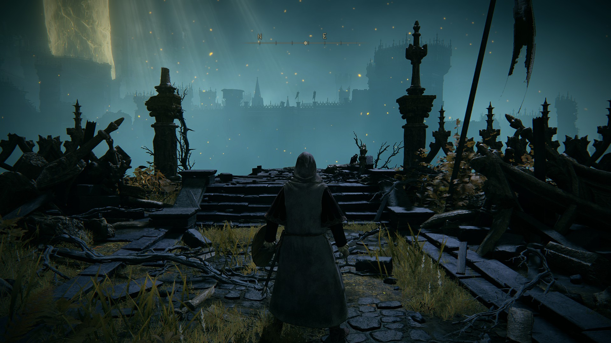
After some neat introduction, I get smashed by the first encounter, but then realize it was scripted… sortof. I’m still a bit rusty and I never really used spells in combat before except for healing myself, so this will be a climb from the bottom once again. Bring it on! I first go into the tutorial path, and fail miserably to parry any hit, so I just ditch the shield for now and focus on using my spells to win encounters.
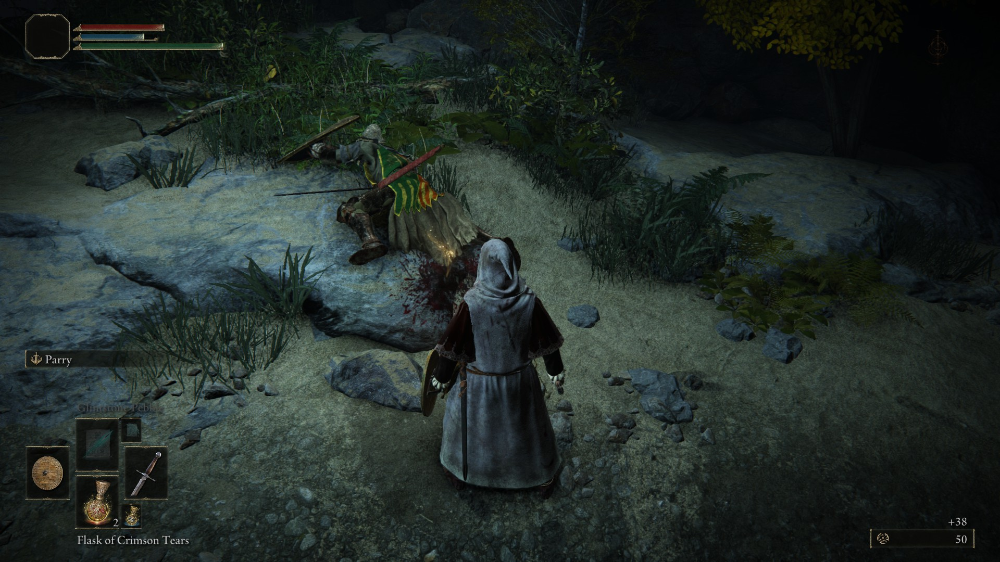
After clearing the path, I immediately find a stone lock. Lucky choice I made it seems, until I have to face deadly corridors with a doom engine pursuing me. I’m too weak to handle the ghosts ambushing me for now, so I give up after a few deaths. I put a marker on the map, handy feature, and set off to explore the brave new world awaiting… I never thought I’d live to experience that, I’m tearing up a little. Taking my time strolling around and collecting ingredients from the wildlife, this feels strange, a bit like dark souls, but also not.
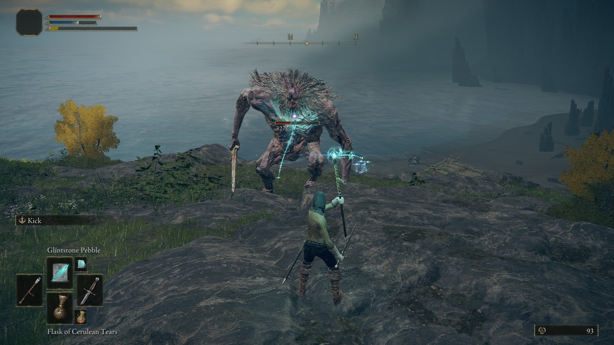
I need to get back my rolling reflexes, meanwhile I fell it using my spells and notice it takes more damage in the head. Localized damage is really nice, this’ll be fun later on. That giant is a true rune(the new currency instead of souls) piñata and it’s worth killing while passing by. I scavenge the beach, see some weird magical tracks, and buy some crafting recipes from a merchant tucked away, nice. When turning back, I find a crack in the cliff and it leads me to a dark cave with a grace, I’ll come back to it later on as it’s impossible to explore yet. Going in the direction of the next main spot, I encounter the first boss and walk around it after getting spanked a few times.
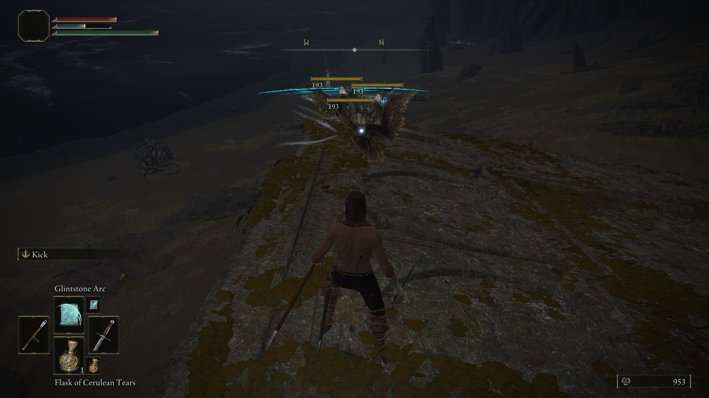
Ruinous Path
The ruins were unexpectedly good, with another merchant(on which I promptly spent my runes to buy all the unique items and a torch) and I get the ability to craft items on the fly. I also find a station to upgrade my gear, sadly I need shards first but this will be useful! Using the torch, I try exploring the dark cave once again, and it works! Until I get demolished by a boss, time for a tactical retreat. All this time, I’ve been diligently reading all items descriptions, I want to enjoy it to the fullest! I notice a strange statue directing me to a side path, which ends up being a dungeon. I fight off some mean stone imps and obtain my first spirit summon, although I don’t have the bell yet.
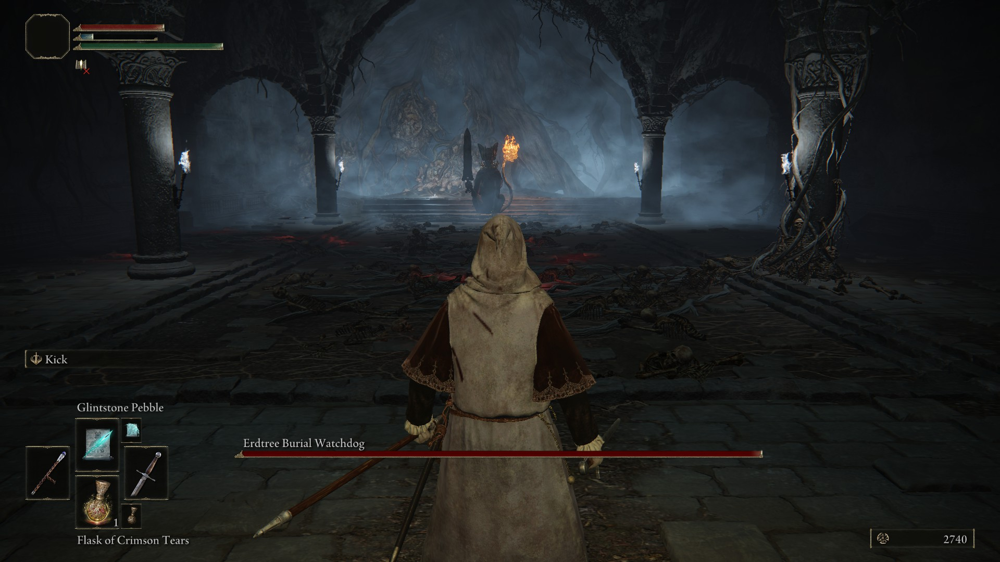
Interesting, seems like these small dungeons are indeed small dungeons to clear off with a teleporter back to the entrance. I got lucky and dropped another shard before, so I start by upgrading my staff, then I proceed towards my main goal. I touch the grace near the Stormgate, encounter Melina(what seems to be my companion for the game), then gain the ability to level up and horse riding. I clear out the ruins next to it making use of the stealth mechanic, which for some reason doesn’t make you detected after using sorceries(only the hit enemy will). At this point, you’d think I would go through the main gate, but sidetracked is my second name, and I go clear out several small dungeons I postponed before. Some expeditions less successful than others, but I find the path to a dragon island at least. The Tree Sentinel and the death trap ruins will wait.
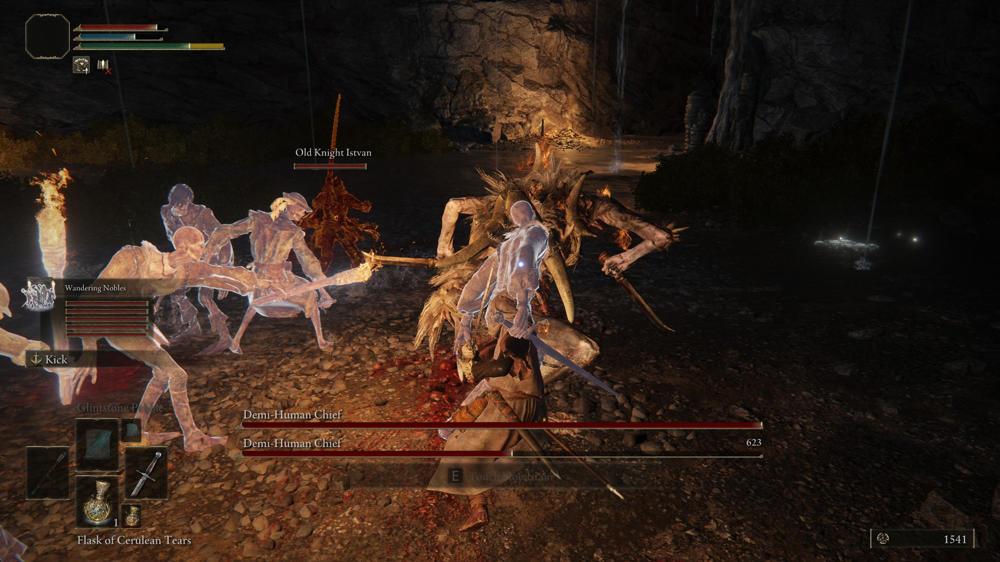
While running through the bottom of a crevice, I get my first NPC invasion and as you’d guess I got trashed. After a tough rematch, I fell it and obtain his strong dagger. I haven’t yet found a better gear piece suited for me, gotta keep exploring. Then on the same path, a dungeon leads me to fighting Patches, who I obviously spare. This guy’s a real gem, and now I’ve got a nice shop to access.
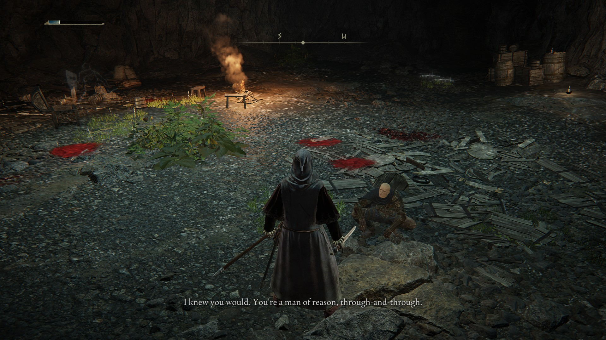
Reaching the end of the crevice, it opens in the small swamp near the start, and the home to a tough boy. It takes me some tries to fight off Agheel, and after some epic horseback arcane shooting, it dies. Hitting the head deals a lot more damage, without it I wouldn’t have had any hopes to do it but it still drained all my FP and cerulean flasks. With the swamp drained, I can access several points of interest so I begin with a mine which yields me a lot of smithing shards. I’m able to upgrade my staff even more, sweet! Not enough to have a better sword yet, but it’s progress.
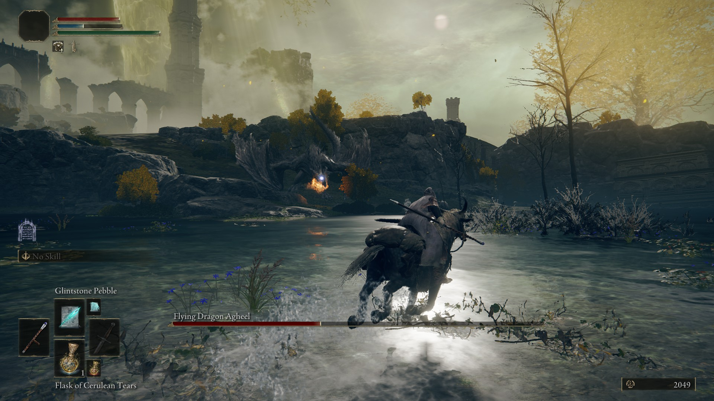
To Hell and Bark
After this, I clear out the ruins in the middle of the swamp, open the chest and… it’s a teleport trap into a deadly crystal mine. Oh no, oh no no no, this is a problem. The guards, shrimp or centipede, are very deadly, and I painstakingly manage to reach the entrance after finding a new sorcery staff and spell. Sadly the staff is worse in terms of intelligence scaling so my dps goes down if I try to use it. The spell seems to be a strong crowd control, so maybe it’ll come in handy against swarms(spoilers, it sucked).
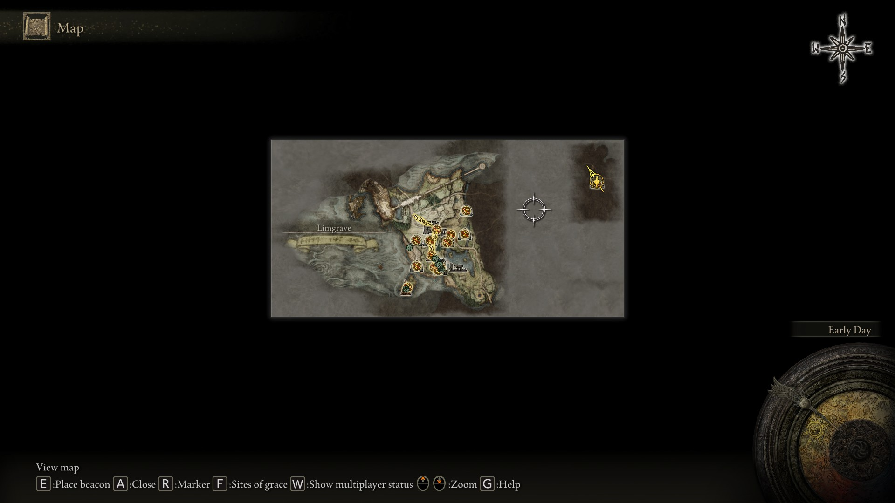
Exiting the nightmare mine, I end up in a worse place, a hellish bog of crimson rotting corruption. I need to find a site of grace to be able to leave this place. After dying to invisible casters and clearing out weird golem balls, I figure out there was one just across the exit of the mine. Seems like it’s safe to cross on horseback, so I go there and oh dear, now I get transported to the roundtable hub after sitting. It will be my main base in this game huh, alright. This time I really am back to the starting area, the trap ended up being a lot more than I thought.
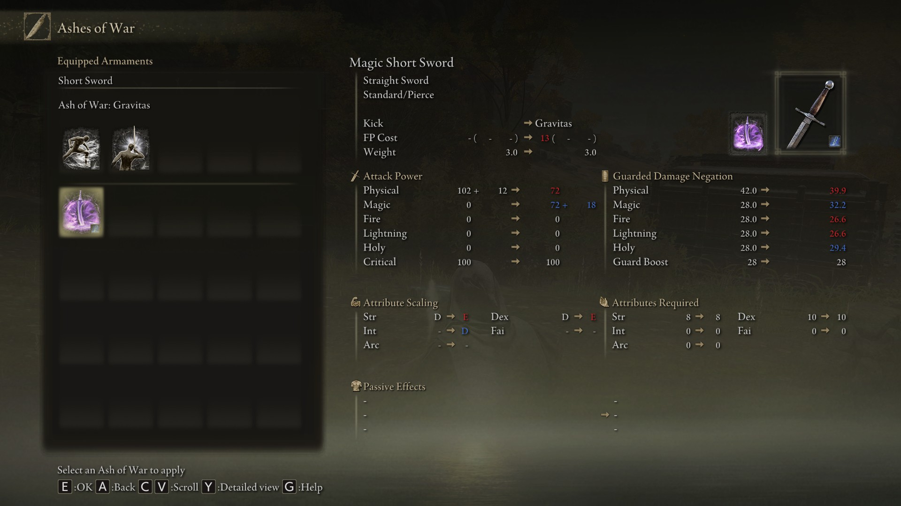
With my newfound strength, I go and manage to defeat the Tree Sentinel after a hard fought battle. What was keeping me behind is defeated, I walk proudly to the Stormgate to proceed on the adventure. The first thing I find after clearing the blockade is my first flask increase, this was oh so long overdue! I also obtain a neat jellyfish summon and end up helping the Iron Fist, or Mr Potman as I like to call him.
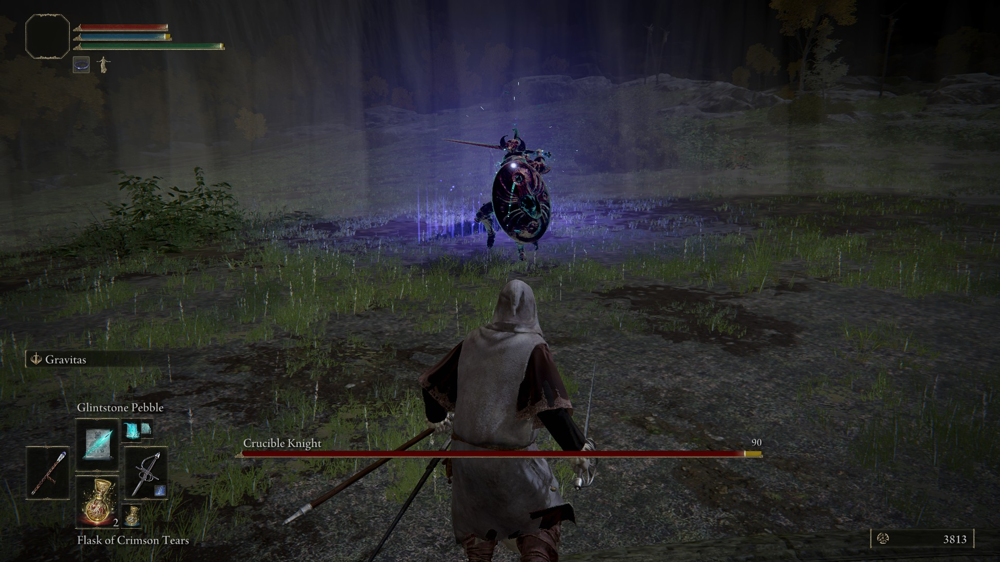
Too tough for now, I go explore the east side of the map. Starting by getting lost in the woods, I go to the map fragment so I can navigate better then promptly get mauled by a giant bear. While getting back up to the eastern cliffs before the forest I hadn’t finished exploring, I encounter my first convoy which I promptly clear out. A weapon I can’t use, whatever. I find the sorcery merchant in the lower level of ruins on the side, finally after all this time!
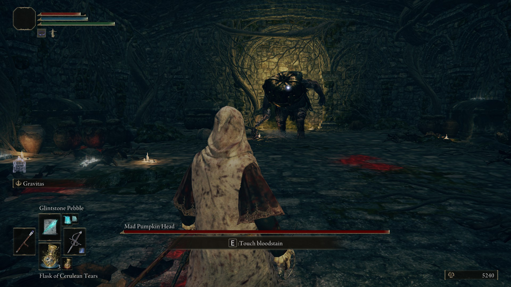
Wanderlust
Sadly most of the available spells seem bad compared to my starting one, but the scroll I found earlier unlocks a really good slashing spell. Ever since I switched out to a rapier I was lacking broader strikes, so now I can cover more ground! During my search in the forest, I find and progress some NPC questlines. First is some werewolf warrior that asked me to find a traitor, then I helped a noble reclaim his ruined castle. I end up going down an elevator in the middle of the forest, and what I find is beyond all that I was expecting.
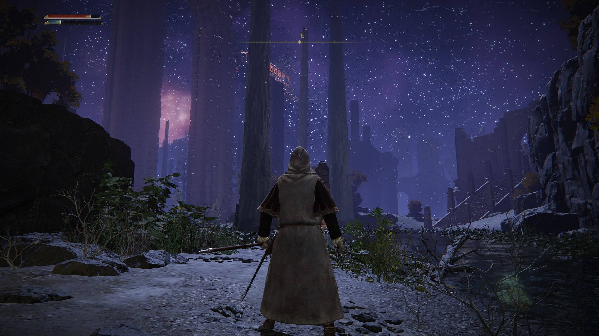
After I obtain the map fragment, I leave to finish clearing the forest and find both a flask upgrade and a special flask! Would you look at that, a teleporter gate that sends me… oh dear, even farther away than last time. Although I’m thankful that it’s not directly hostile territory and there’s even a grace, perfect. Getting quite close to having all of the beginning area covered, I first go upgrade my weapons once again. After this, I clear out the border and go meet Patches again, who’s got a nice chest for me. It sends me in the middle of the giant bears in the misty forest, heh, too bad I already cleared this place. I know how to leave safely!
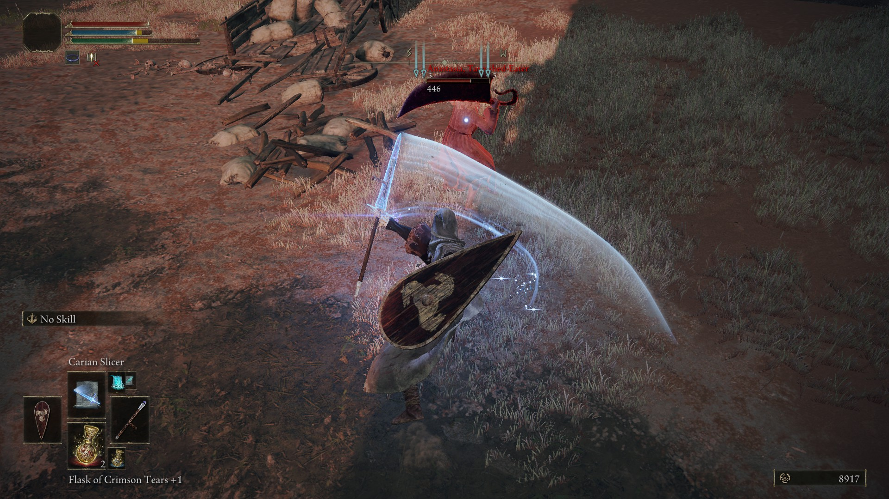
Then I cleanse a ruined town from an undead barge, and loot a stamina regen charm, very useful. Ever since I started using the slice sorcery, I switched back my staff to the right hand and stay with a shield at all times. That’s proving to be a good idea seeing as my rapier is able to safely poke while blocking. I found an ash of war merchant and bought the parry one, so my shield can even parry now! I never expected I’d end up parrying with my build, although I still enjoy slicing and shooting away.
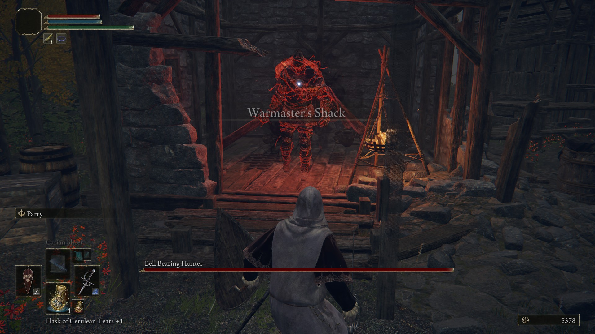
Onwards to the main castle! While going there, I sidetrack quickly to defeat the crucible knight using a running away tactic and I get a new incantation. Too bad I can’t use these… After all this time, I enter the first story boss fight… very long overdue indeed. The fight ends up being really easy while Aurelia(that’s the name of my jellyfish summon) tanks and drags the aggro back every time. I even forgot I had the shackles item to hinder him.
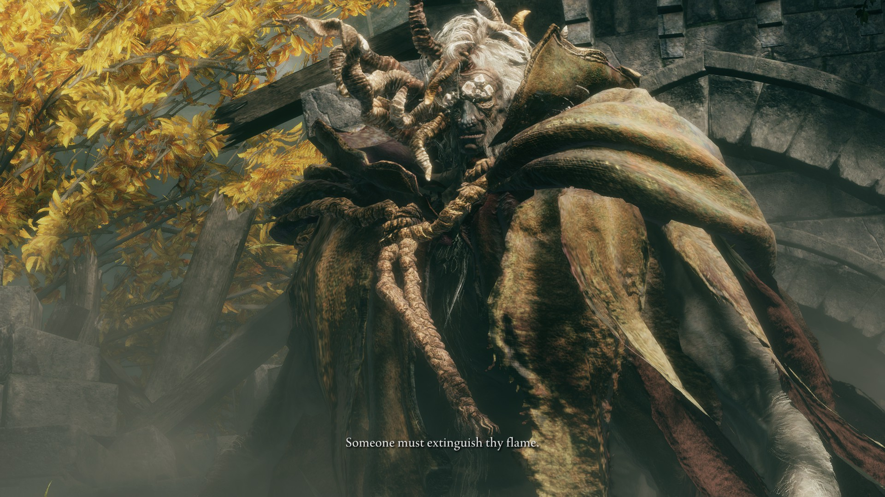
Castling Away
The gatekeeper felled for good, the castle conquest begins. It’s a long and arduous ordeal with lots of twists and turns, I failed to find the grace spots until many deaths. The good news is that I found a sorcery related merchant for ashes of war, I upgraded my weapon skill to a giant sword. I clear out a bridge of three golems and find a blocked door, guess it’s not the right place.
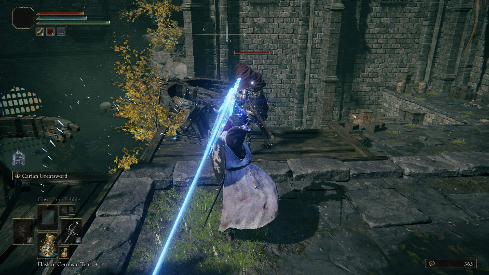
Turning back, I find the boss fog but instead take the other way into the depths and end up fighting an enraged tree boss monster in close quarters. Considering my very squishy build, I was at a loss on how to survive and beat it, until I realized I didn’t need to keep wearing the same clothes from the start as long as I stayed under a threshold of weight. The epiphany saving me from pain, I now wear exile armor parts and more than doubled my poise and armor ratings. I’ve also switched to a metal shield, so blocking is worthwhile even against those scary monsters. I never imagined my astrologer build would be strong enough to fight like that, but I guess I underestimated it by doing tunnel focus on sorcery.
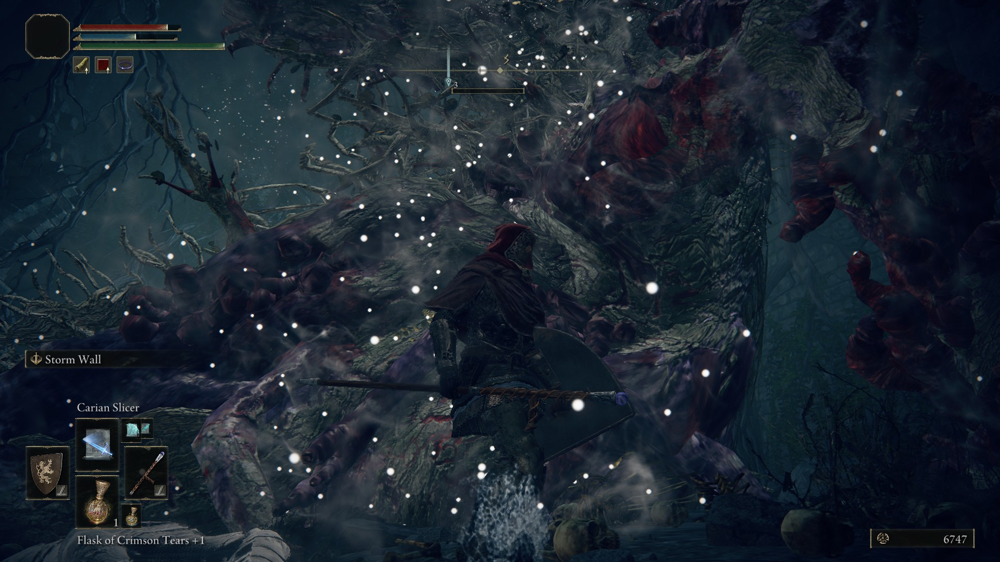
It’s like I got stronger despite not getting an actual upgrade! The castle is taken, the king is in check, it’s time for the mate… Is what I thought, but it looks like Godrick is even stronger than Margit as a wallcheck. Sidetracking is the way to go I suppose, to Caelid! Willingly going back to the nightmarish hell, this side is surprisingly a lot more fun. Maybe it’s because I started using my shield but it’s fun riposting with the rapier and stunning even the giant dog monsters.
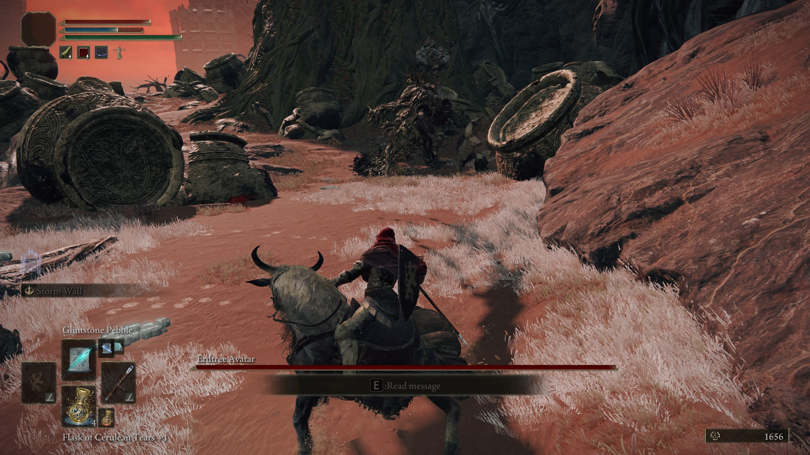
Exploring the rotting plains yields interesting finds and fights, with some really strong crow abominations and funny firethrowing machines you have to backstab. This is also where the entrance to a mine is, leading back to our friend Mr Potman stuck behind a door.
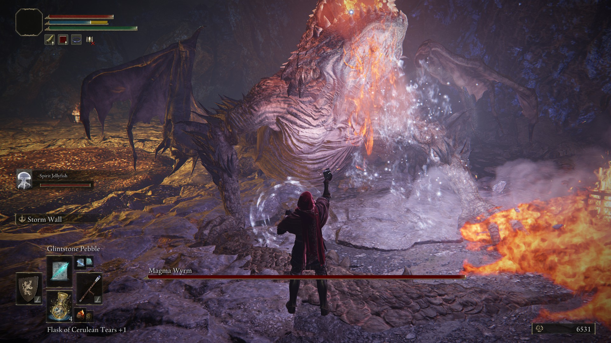
Slumbering Decay
Next stop is a fortress on the southern end. It’s heavily guarded and I have a field day using stealth to take down the barricades. Atop is another teleporter which sends me to the very south end of the region next to another fortress right under fire. After a run for my life, I find a grace then leave because I won’t go there yet.
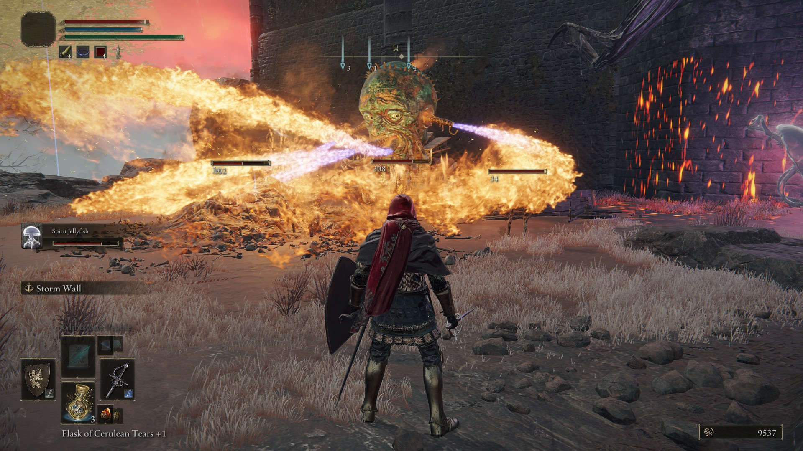
Considering my strength now, I feel confident enough to go clear out the very first dungeon that was so difficult. Still an ordeal, but with my new skills(irl) and levels, I was able to take down the abominations lurking. Clearing out loose ends in the explored plains, I never expected I would find my first suitable weapon for my build, the sword of st. Trina. The stats aren’t shying from my current weapon(even if the int scaling is a bit worse) but the real power is from the passive bonus to build up sleep on hit. This feels so strong and fun, I don’t think I’ll go back to the rapier.
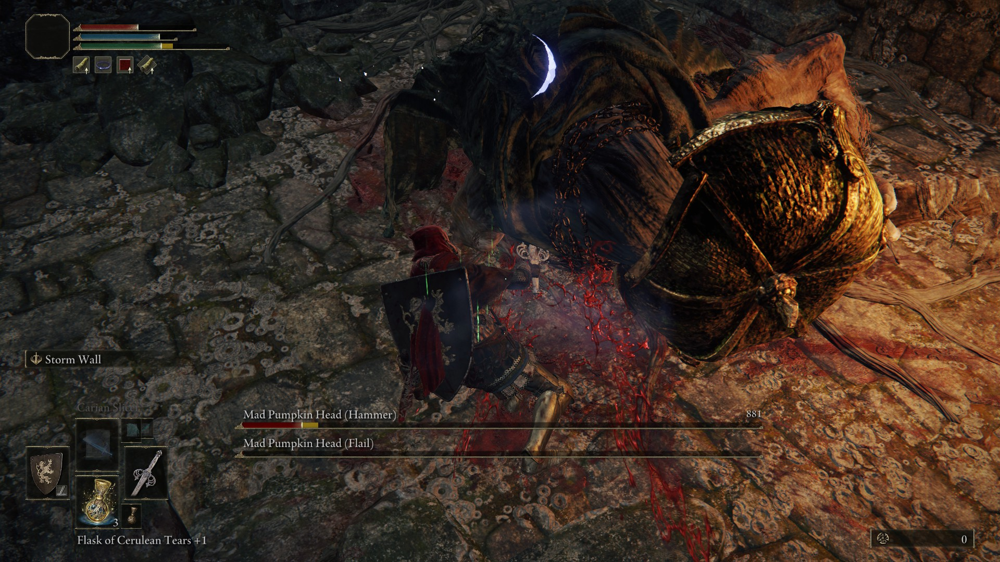
I thought I was relieved from things yet to clear and the game threw at me a hard cave that requires a way to cure rot or I can’t even reach the boss. After dying some, I just had to give up for now since I can’t craft the item needed but I don’t mind it, can’t clear everything too easily. To compensate I explored the southern end and defeated a great decaying dragon after many tries.
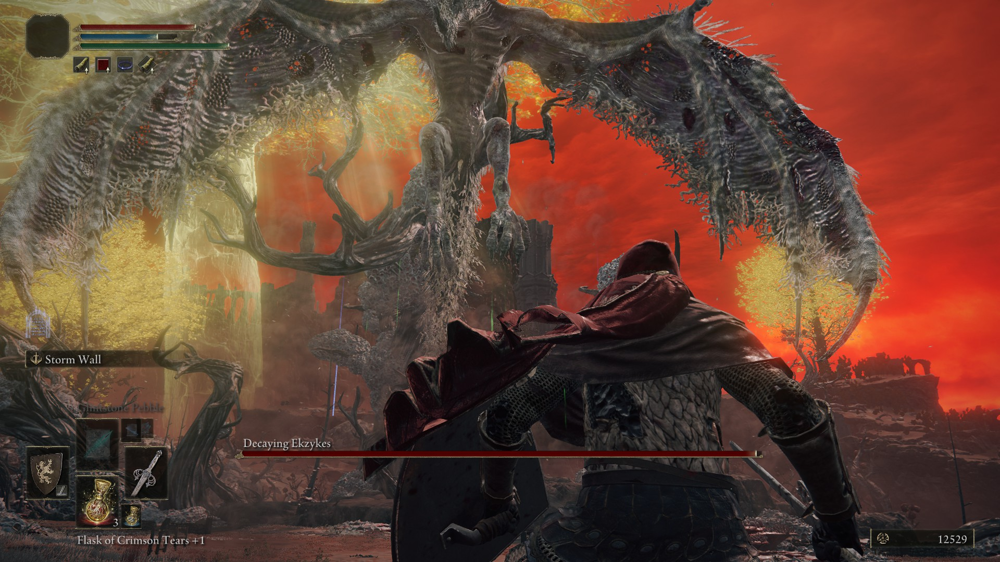
He was guarding a draconic church ruin, with many new incantations available to trade. A bit further down the road is the map for the area, I can finally see where I am and where to go! On the road, I face off against the Night’s Cavalry and after some epic jousting, I knock him off his horse. A bit further is a deadly death bird that I’m far from able to defeat yet.
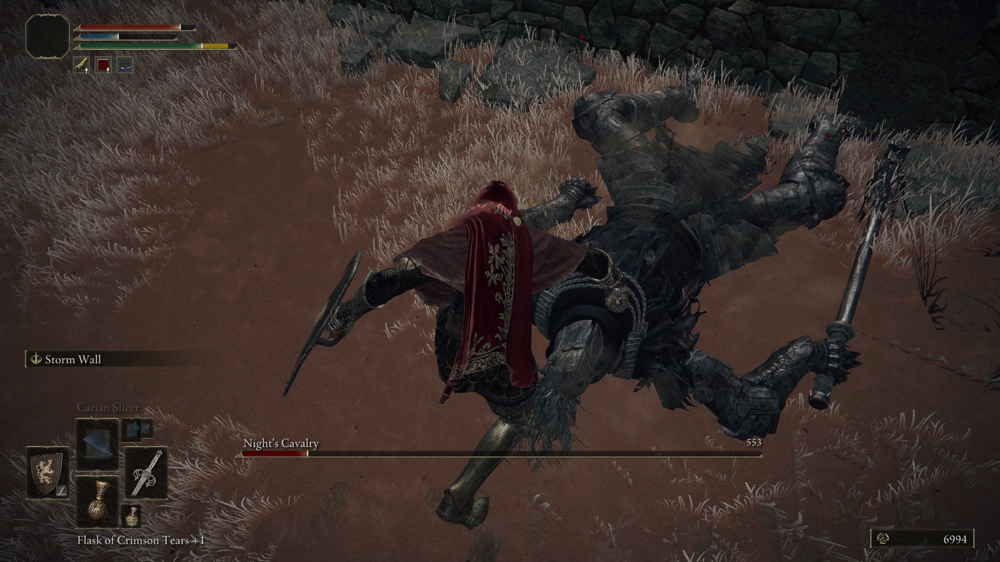
Throwing the First Rock
Going south I intrude a battlefield of knights and monsters, I decide to let them fight it off to reap the battered victors like plucking a flower. Struggling still as much against the crows, I reach a small dungeon with a boss that makes them look like final bosses. Deciding to not take over the defended fort yet, I go clear the swamp in the center and find what might be the best items for my build. Not only is there the strongest staff I’ve ever seen(S int scaling!) but there also is a new good spell to throw rocks at enemies.
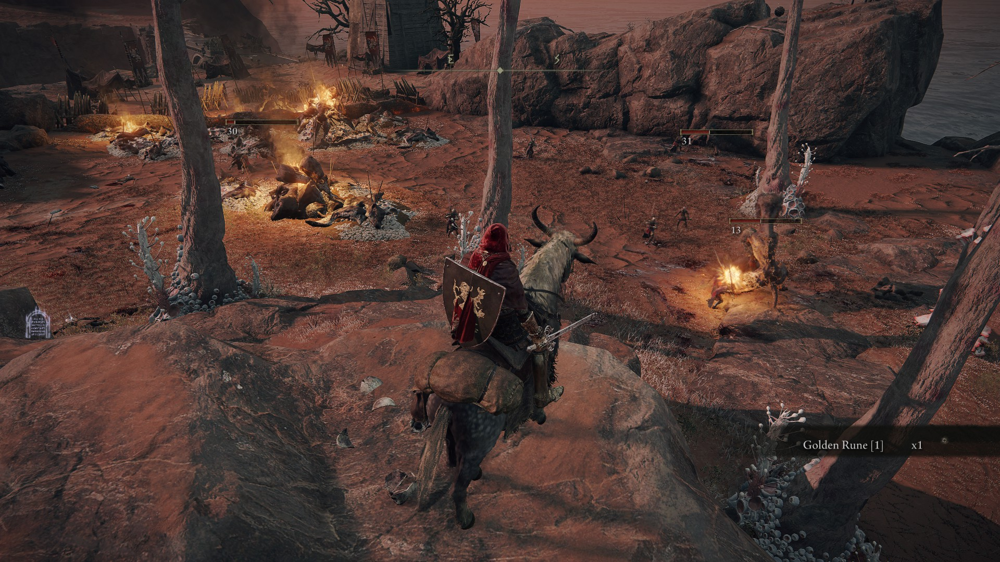
I upgraded the rare summon Oleg I got some time ago(from the first dungeon) and now I feel like all these upgrades will skyrocket my fighting strength, it’s time to test it out. My first fight is a bit of a disaster, but my dps clearly increased. The second fight is the boss of the mines I was sent from the first trap long ago, the size is perfect to test out the rock sling and while the numbers are slightly lower than the pebble, it is able to break poise from range.
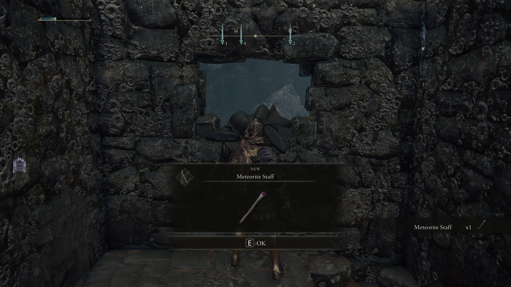
Being more comfortable with it, I put it to good use against the death bird that gave me so much trouble. With such conclusive results, I set off to take over the south fortress. The infiltration is quite fun and nerve-racking due to the lack of checkpoints. But the respite is short lived, since the boss is right after, and it’s another duo with an old friend. I’m not scared though, as I have a friend on my own now. It’s a tag team battle! Thus ends the fortress invasion, as it seems like I need to come back later.
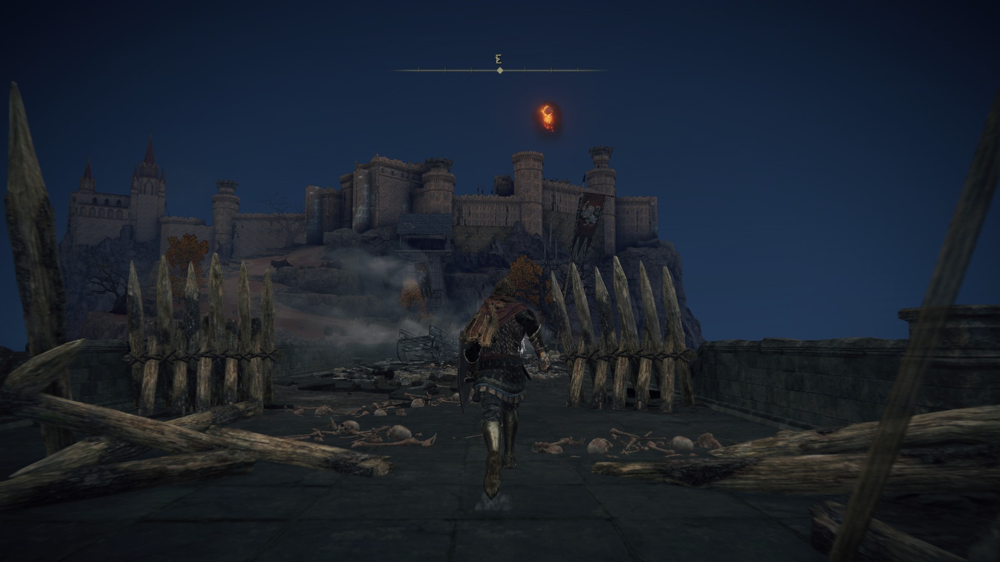
I go up north through the town of sorcerers and make quick work of the boss there, I almost feel sorry for them. Past the city, I get brutally shot down by a trio of bosses I can’t even seem to damage. But that was a dead end, so I just mark it and go look at the upper half of Caelid. It’s filled with dragons and the monsters one shot me, ugh, I quickly grab the map and postpone this place.
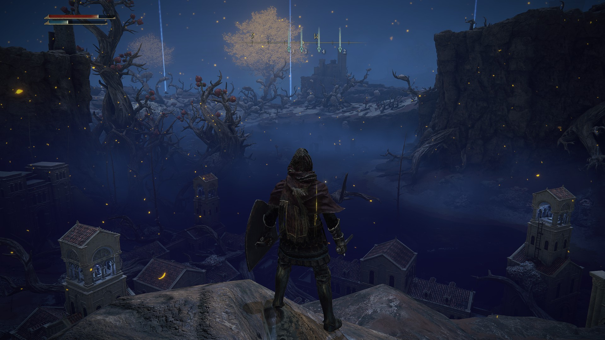
Insulary Penance
Seeing how much stronger I got, I went to finish what I started and crushed Godrick using all my means. I didn’t want to take risks since I wanted to keep the npc summon alive and this was a total success! That way I could continue her storyline safely(I learned way later that it doesn’t matter anymore).
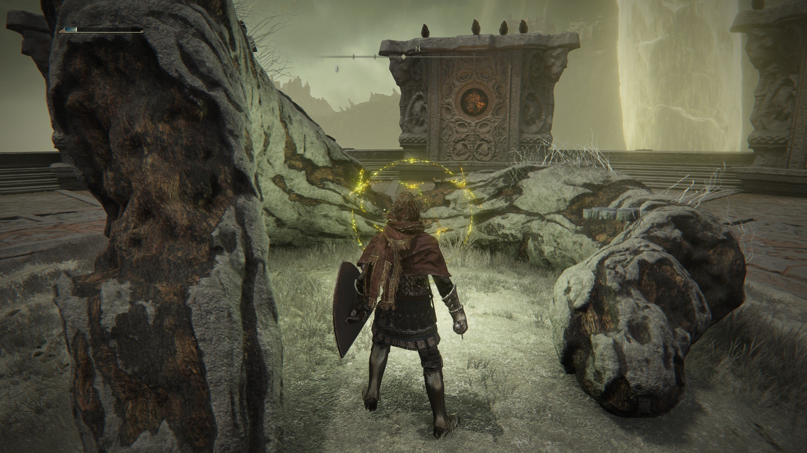
Speaking of storylines, I finally know the goals, I have 4 more targets to aim for. I set my sights on the Weeping Peninsula, as exploring is the current necessity. I’m a bit destabilized because of how strong I am now that I go into a lower level area. Maybe Caelid was too early for me to go into, huh. Seeing how I bully bosses now, I tried to fight the weakest ones with only my sword to make it closer to an even fight.
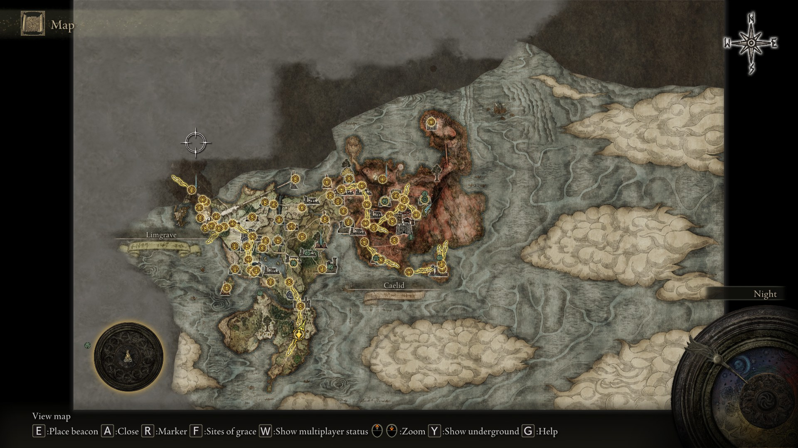
The vistas around look refreshing after Caelid and with so many tough bosses in a row, it’s pleasing to have lots of exploration unimpeded. I’m having fun training my close combat skills against the minor bosses(to various degrees of effectiveness) in the area. With everything else done(and another Death Bird), I can go take over the ruined castle in the south. The boss there is a pushover, although my level and the helper certainly play into it.
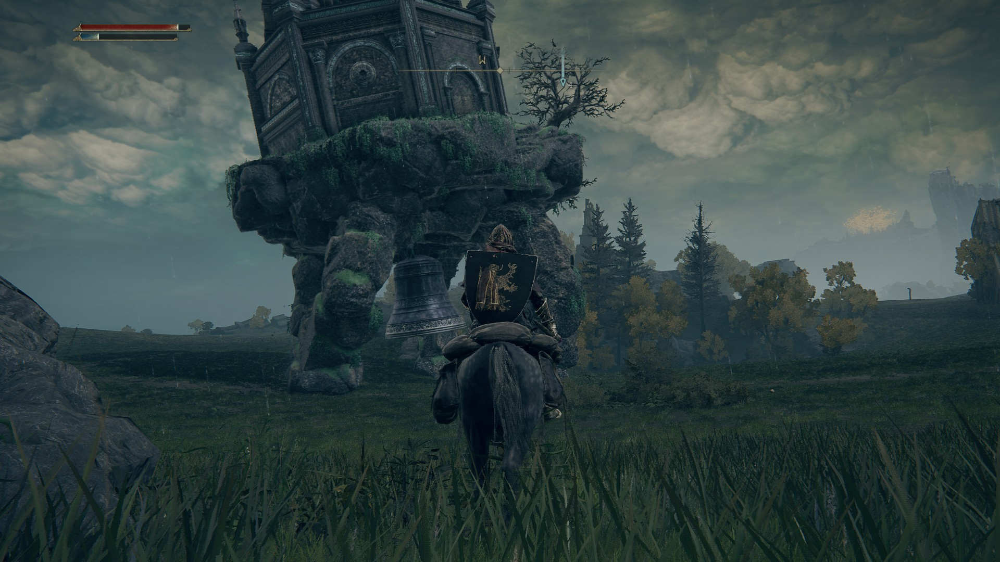
The peninsula adventure ends with a sad note as the girl that sent me to the castle is found dead. Next is the north, past the Limgrave castle, into the watery bog. It’s a vast expanse with fog everywhere, making exploration tougher.
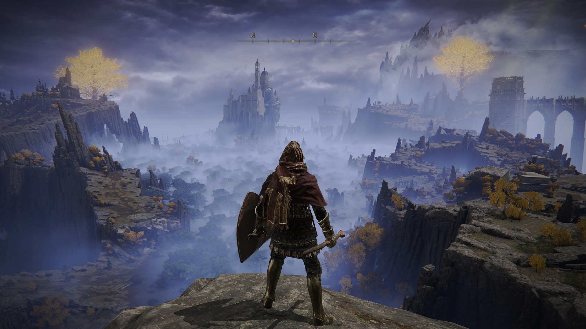
Knee-Deep in Scholarship
I learned how to stop poison and rot from being crippling using the flask of wondrous physick to gain passive healing, and that means I’m able to take revenge on the last bosses I couldn’t defeat before. Seeing how vertical the revealed area is, I decide to follow the shore up to the very north.
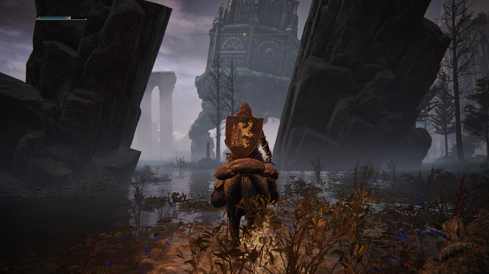
The very top is a ravine that leads me to a cliffside dungeon with harpy siren monsters that have an amazing voice. The final chamber homes a deadly dragon but sometimes I don’t want to deal with them face to face. Defeating it opens the path to a new area, oops, I didn’t intend to progress like that.
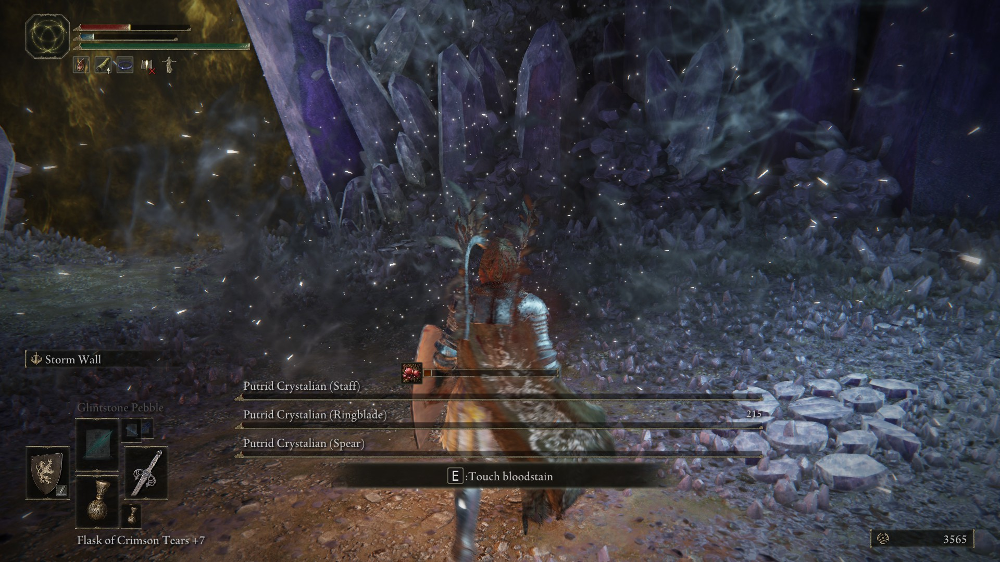
Going back to the roundtable, I notice one NPC left and another one is leaving, oh no… was this a mistake? There’s even a weird corrupted knight in the aisle now. No use worrying now, what’s done is done, I’ll finish what I started and clear the remaining parts of Liurnia. Patches returned and I interact with a few more npcs scattered around, but the main place to visit is now the academy.
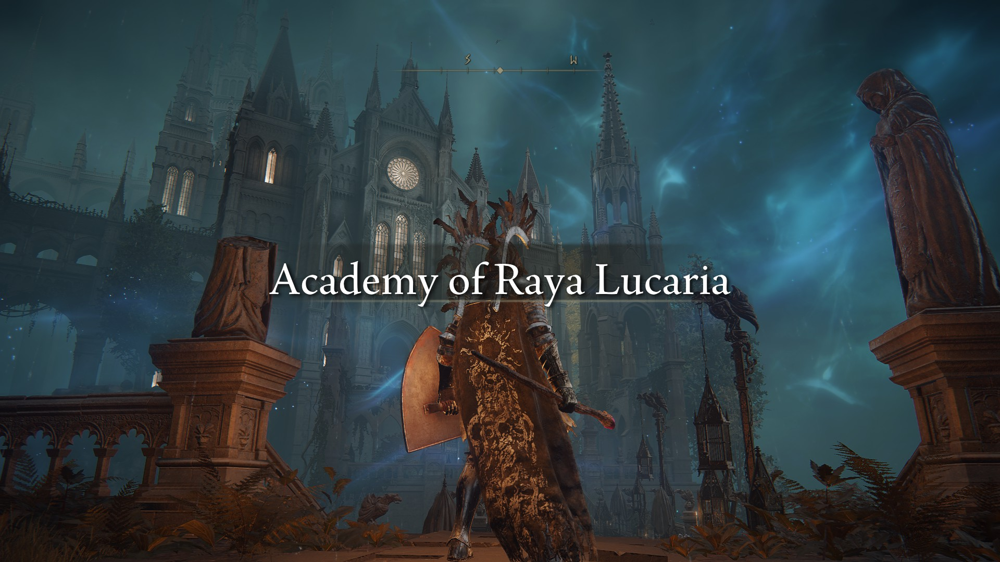
The black hole spell ends up being quite useful at times, and at the bottom of the giant waterwheel is the iron virgin monster that Patches mentioned before. Expecting a troll, I still let myself eaten and to my surprise, I do really end up in the volcanic manor. After some tense moments to avoid losing my runes, I manage to go back to the academy and proceed to the boss. I’m having a lot of fun in this place so far, and I even found a cool new shield.
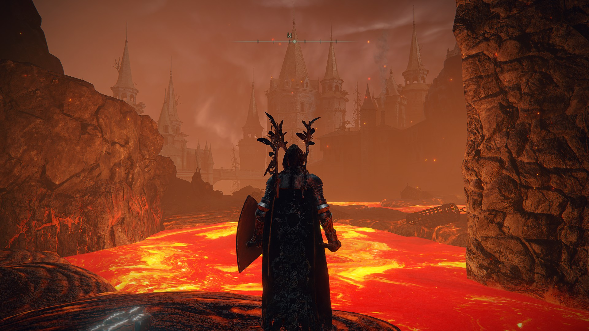
Going Over the Moon
Rennala ends up being a very cinematic boss that’s cooler than hard, another big step done. I start clearing a bit the west side of Liurnia and find a half token in a hidden village. Going back to the roundtable, I get assaulted but defeat the attacker. Apparently the cause was the half token I found earlier, and I learn where the other one is, neat.
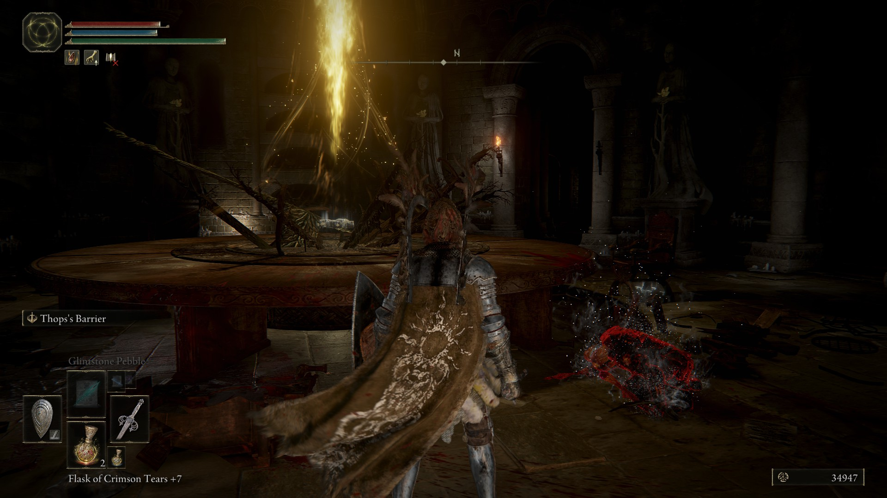
I finish exploring the west of Liurnia with a sideventure into the 4 belfries that seem to send me to random places with boss monsters(with a revenge) and just snapshots of the scenery. I guess it’s a way to show those places exist before you go there, that’s pretty smart huh.
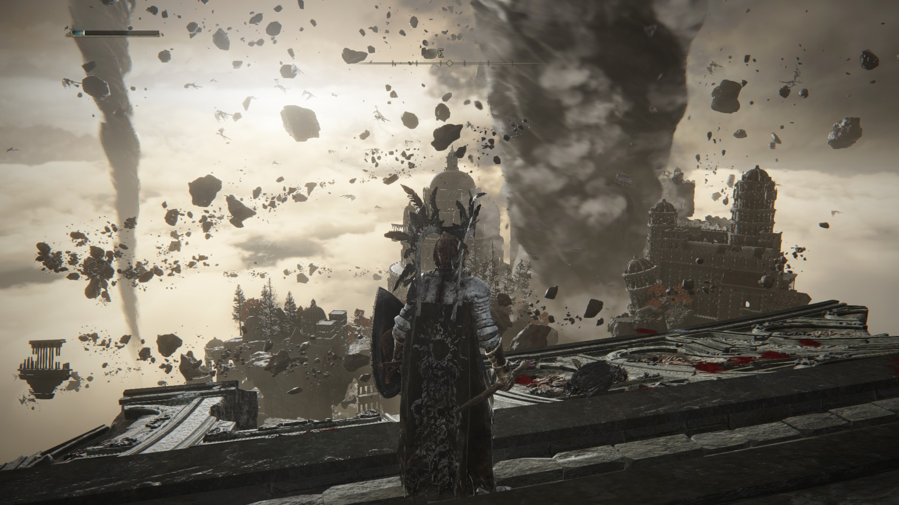
I get stuck in front of a manor that’s cut off by a deadly spell, so I fully clear the rest of Liurnia instead. After some tribulations, I end up in front of the great lift that I can’t access for now. Going back to the roundtable, I show an item I got from a side boss and it starts a quest that sends me to the manor, guess I’ll go there after all!
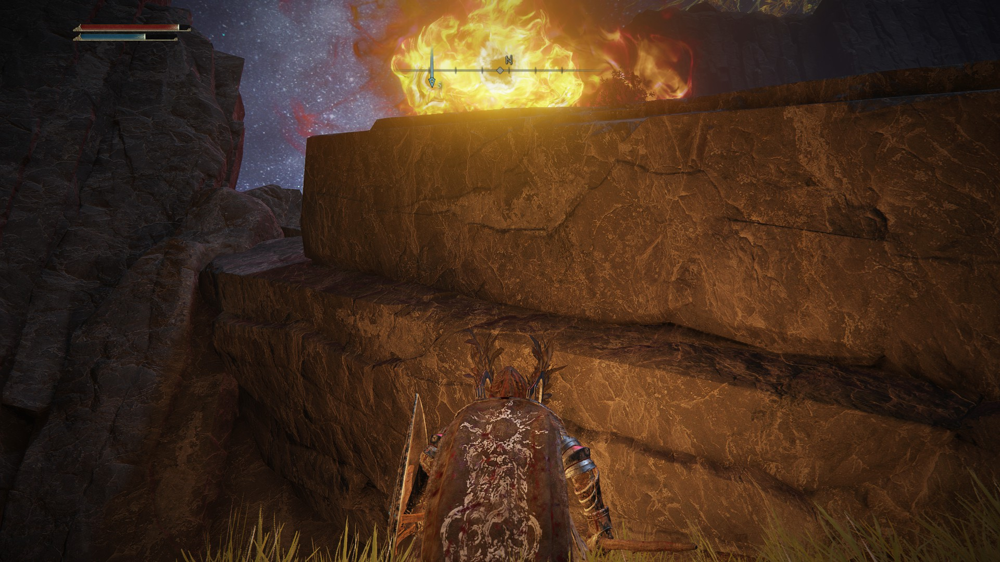
It’s very misty and hard to see, with spooky hand monsters and ghosts everywhere. Atmosphere is on point, and the boss ends up being pretty cool as a showdown between spellswords. Past the gate, there’s a dragon that somehow vanishes after bopping it a few times and I meet Ranni, the objective of my quest. Discussions ensue and my next goal is to go explore the underground area under the misty woods, perfect timing!
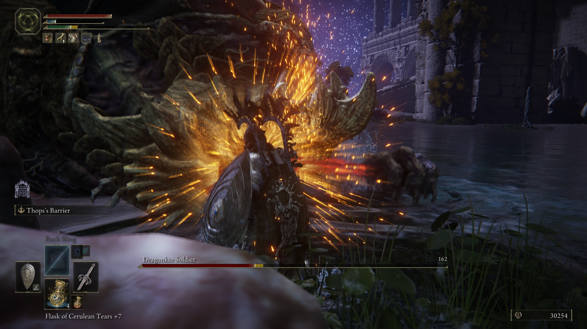
Star of Extinction
It was long overdue, and it ends up being smaller than I expected, but with a very pleasing level design. I’m told that I need to defeat Radahn, perfect, I was wondering how to do that for a long while now! I meet up old friends as we prepare for the great festival and it finally begins…
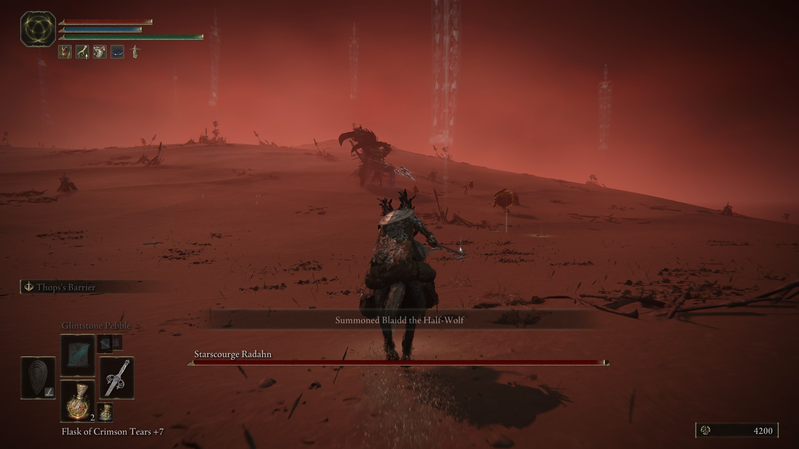
This is probably the hardest battle I’ve had to do, not because the boss is too strong, but because I want to keep Mr Potman alive during the fight. The great foe is felled, I now have 3 great runes out of the 5 I know of. I go to the tower to activate his rune, and find a deadly boss at the bottom, but rock sling proves its worth. That spell is a lifesaver against nimble or big enemies, despite the lower efficiency to cost ratio.
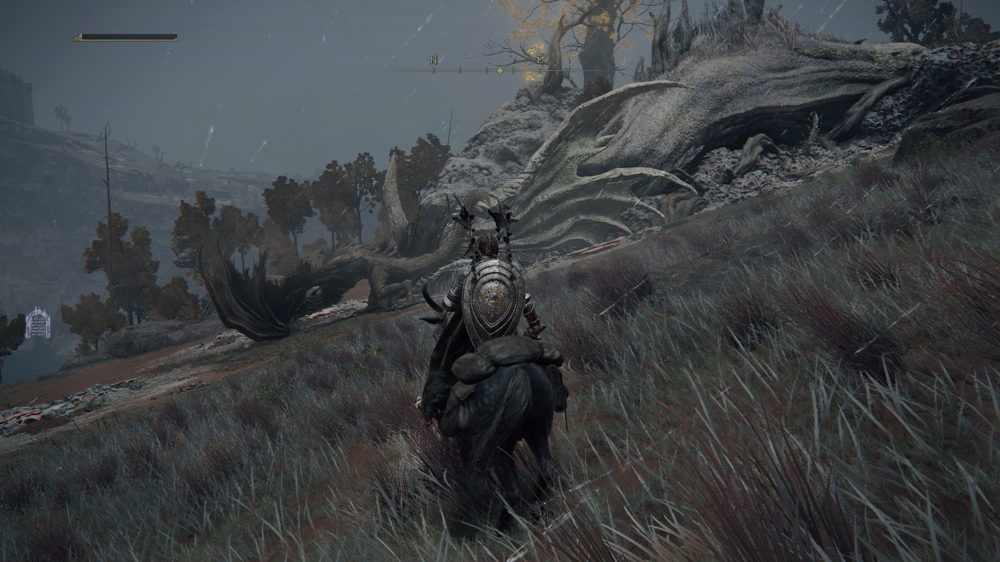
After this, I have to finish what I started and clean up the rest of the dragonbarrow. It’s a great place to gain runes, but randomly slipping made me lose 200K runes, ugh… Meanwhile a boss got stuck on a tree and died on its own from fall damage, I was wheezing pretty hard.
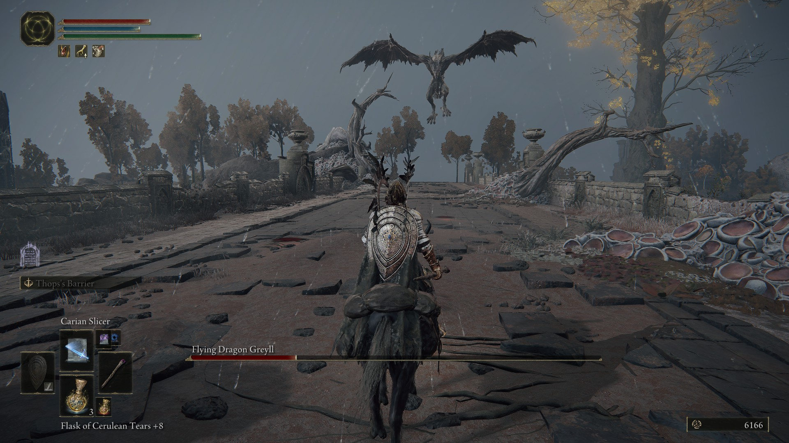
Another place cleared, I burrowed into the other underground place, this time with giant ants and more mudmen. The end of the tunnels lead me to a dead end but the boss was guarding a legendary item, the last stage material for special summon ashes! Past this, I activated the great lift since I found the second medallion half during my exploration of the dragonbarrow.
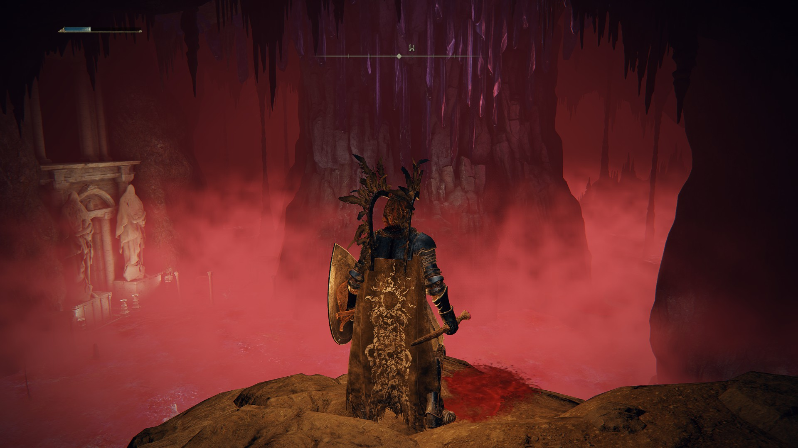
Progression Plateau
Great time to go into the Altus Plateau, I’m greeted by a dragon that goes away after being smacked a few times, how familiar. I faced him off again later and took him down for good, sightseeing went well.
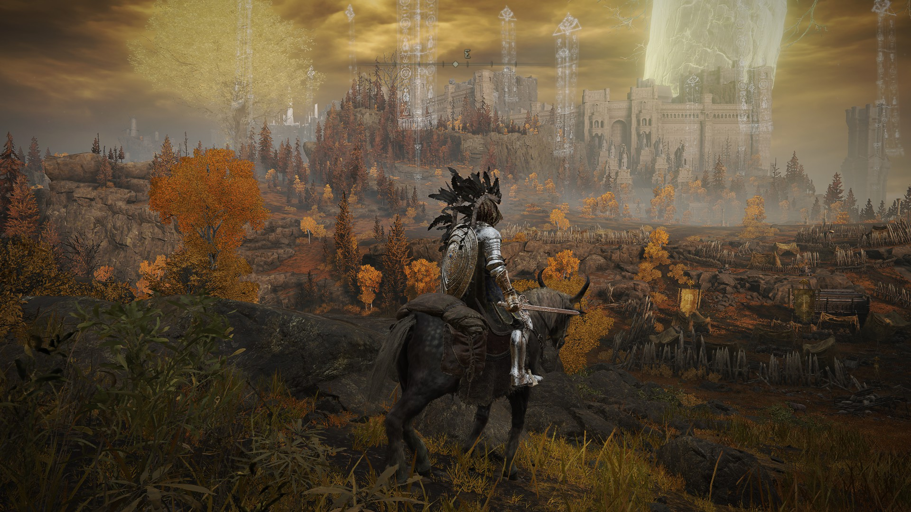
The plateau leads to the Mt Gelmir, which is my next destination. There I find an amazing spell, Comet Azur. A costly death ray and, would you believe it, a bit later I loot a crystal tear for the flask that allows a short window where I don’t spend FP for spells. Finally unleashed the true strength of the sorcery build(although I don’t really like using it, too cheesy)!
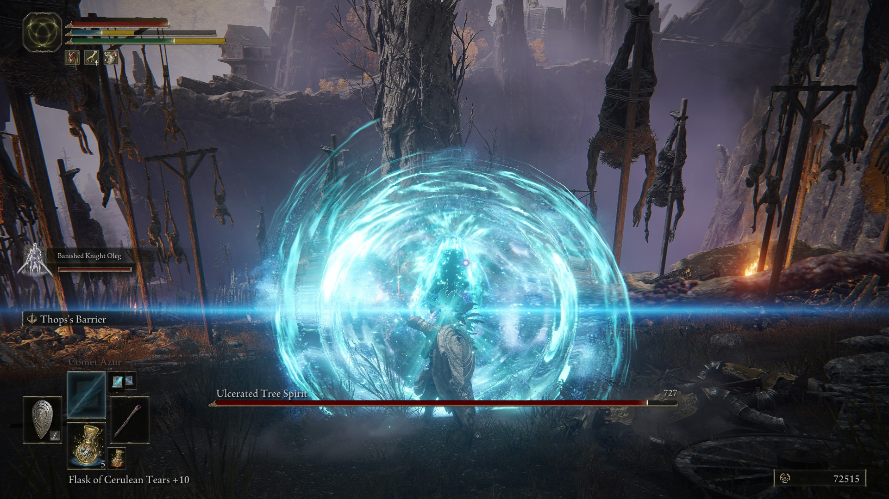
With my newfound power, I enter the Volcano Manor feeling like I deserve to explore it this time. I scour the place and demonstrate my new abilities to the fullest, but then the big boss of the place requires to use a special weapon, damn! I’m also unsure if I should defeat him that soon because I’m doing tasks for the residents of the manor faction… I guess I should postpone his defeat for now and direct myself to the capital.
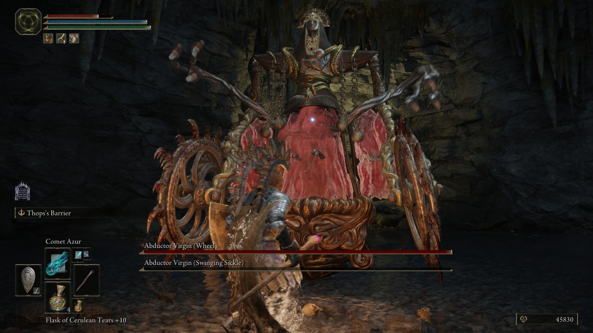
The best place in the world! Or so they say, but the outer circle is an old battlefield. A tomb nearby holds a nerve wracking boss, and after defeating golem archers and a sentinel guarding the path, I enter the city proper. I quickly go take down a forgotten dungeon after getting the grace, then I make my way through the buildings of the inner town.
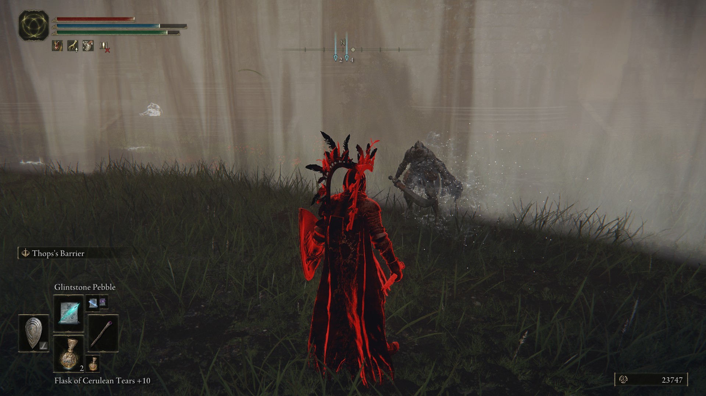
Capital Punishment
It’s a fairly labyrinthic place(including the sewers) and exploring thoroughly is more difficult than expected, but progress is being made. Reaching the boss of the place, I can summon Melina to assist in battle and the fight goes smoothly. Little did I know this would be the last time we would be allies, because not long after, I go through the underground to reach the place where the Three Fingers reside.
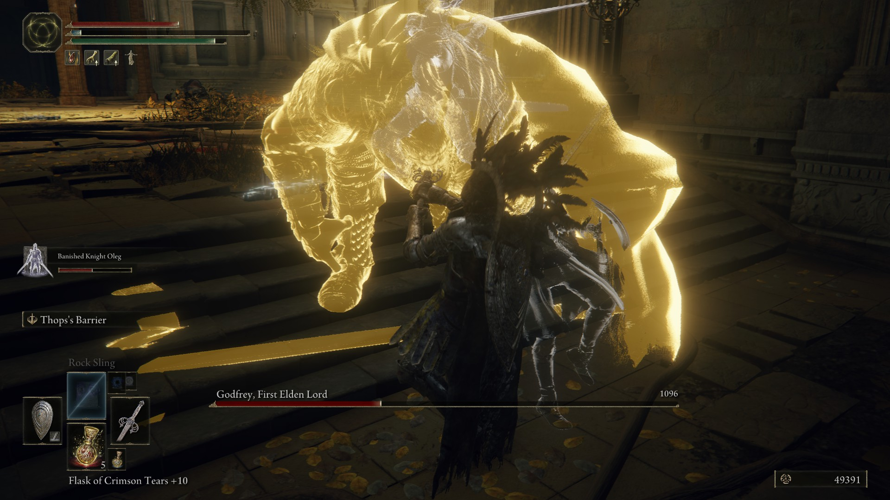
I meet Hyetta, the maiden-to-be I helped before, and decide to touch the three-fingers as asked. What happens I did not expect, I’m now the Lord of Chaos and she becomes my finger maiden, but even more surprising is that Melina swears to kill me before departing. Entropy is inevitable regardless of the world huh…
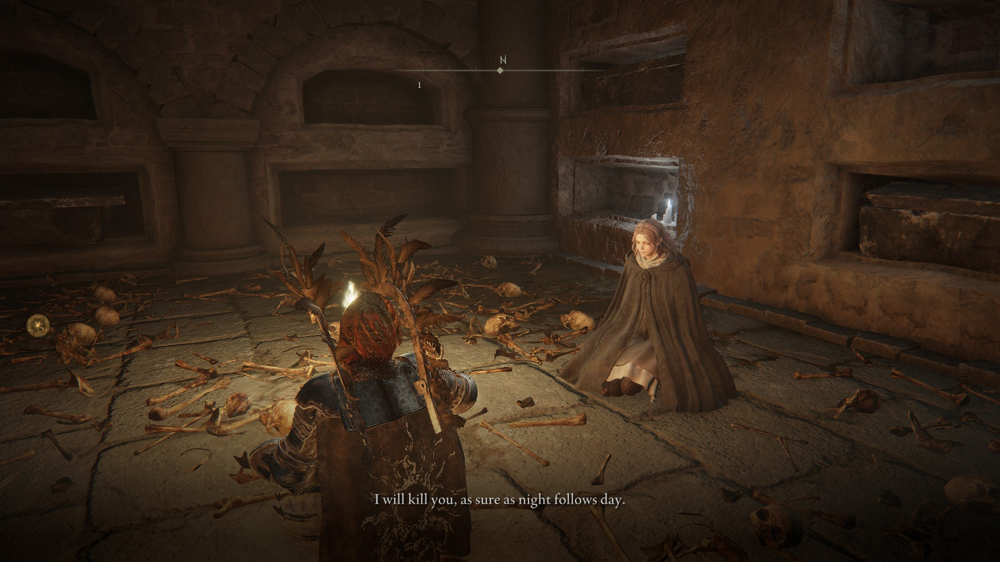
Something irremediably changed, as my allegiance did… Not like there’s a choice now, I might as well delve in deeper. Deeproot is a strange but fun place, and the surprise is that it has a path leading to the previous underground, leading me to where I didn’t know how to get to.
I successfully survive the painful lake of rot, find the last item needed to fully upgrade Oleg and fight off a scary looking void legend, the sidetracking has come to an end. I reach the next step in my journey to the forge of giants after clearing the path to another great lift, icy mountains are next!
Peak Exploration
The path to the top is rough and after defeating some strong foes, I find the last contract I’d been asked to do for the Volcano Manor. Since I’ve done all the requests now, I decide it’s the right time to defeat Rykard. As expected, all the residents leave once this is done, I’m glad I didn’t do it prematurely.
This is all over, the five original shardbearers are defeated, I have to go conquer the castle Sol now. On the way, I get to see a touching reunion with Aurelia and her sister going stargazing. The castle itself isn’t particularly difficult and it ends up being a pleasant experience if you exclude the moment I get blindsided by a double ballista bait to get promptly skewered.
I obtain the other part of the secret medallion and proceed to the east part of the mountaintops smoothly. It holds many monstrosities but my trusty sword is more than up to the task, and I find a rare dragon stone to upgrade an item to the final tier! Before reaching the highest point, I decide to go back and use the secret medallion on the great lift, exploring runs in my blood after all and I get a feeling that we’re approaching the end.
What I find in the end doesn’t disappoint, a giant field with more dungeons and things to loot, this is the final part of the map uncovered. I have to make it last. I noticed a while ago that the underground bit was missing a last half, and I was remembered of it unexpectedly. Tucked between giant trees and rune bears, a bloodied warping gate sends me to the remaining part of the underground, finally all the secrets are unveiled!
Bloodied Flame
During my leveling up, I increased my carry weight a bit to switch to a better armor, it looks even cooler! I also took that time to finish upgrading my sword and shield using the top tier materials obtained earlier. True to my habits, I then have to clear out the snow field, and end up having some fun taking revenge on those damned invisible assassins. I’ve now access to the Haligtree area, seems like this is where I’ll find Malenia.
But first I find that I completely missed the giant comet crater in Limgrave, that’s pretty embarrassing when I even passed by once and didn’t notice it. I decide to go finish the mountaintops before exploring the crater and find a fun adversary to take down. With only the forge to go in, I can consider it done and go hunt in Nokron, the bosses there being tuned for way earlier. It allows me to progress slightly the Ranni questline, but I’m pretty sure it’s already a dead end after Rogier died…
With only 2 options remaining, I start with Mohgwyn, the hellscape with blood everywhere. It’s easily the most stressful area I had to clear out, with a huge part that has no grace or stake and a ton of tricky and deadly enemies to defeat. It’s been a long while since I’ve felt frustrated but I definitely felt it again after losing once again 200K runes and still not seeing the end of the place.
But with enough determination, I fell the crow monstrosities and clean the rest up to the grace. The amount of runes obtained from the basic enemies more than makes up for the trouble and I’m able to level up quite a bit with all the stockpile. The boss feels too brutal to mess around, so I use all the tricks I have to survive and beat him successfully.
Pain in the Ash
That makes another shard bearer down, and this is the right moment to go take down the remaining one, onwards to the Haligtree! Oh boi, I wasn’t expecting this place to be ever nastier than Mohgwyn, but it kept me on my toes even more. Thankfully after chunks of tough content to plough through, there are graces that make it rewarding to finally pierce the blockades.
Although the real tsunami arrives, Malenia is hard as steel and forces me to change up completely my playstyle and gear to have a hope of defeating her. And then, surprise! She has a second phase with a whole new health bar, aaaaaaaah! I need a pause so I go clear up some loose ends in NPC quests, completing the Ranni questline which I didn’t expect I could continue at this point.
After enough distractions, the time has come to take down the hardest boss I ever fought in Fromsoft games, on par with Artorias… Yeah no, I think it’s even harder, I’ll come back another time. I decide it’s smarter to upgrade my stats first and even change my staff for a stronger one with carian sorceries. It’s also way stronger when maxed!
Unless there’s another surprise area, I enter the final area of the game, a chaotic crumbling place full of ruins. It’s still very tame after all the previous stuff I went through and still waiting for me, I defeat the main boss of the area(an actual Artorias wannabe) fairly easily.
Broken Blade
The capital is now buried in ashes, damn I didn’t expect this to happen. But that doesn’t prevent me from going back to hell, Malenia is waiting… Like a gift from the heavens, an update came during the night with a whole heap of buffs to sorceries, mainly cost reductions but also some damage boosts. This completely changed the paradigm and after switching around my sorceries, I found a good setup.
All the tears dried up, the victory is jubilatory even though I lost all my rune arcs to naught. Artorias found its match, that was a long while since I struggled this much, but that’s why I like Fromsoft games. Back on track, there’s an extra optional boss left before the end of the game, so I make quick work of it. Everything feels easy after Malenia.
The end is near, and I’m near the end, time to wreck havoc and bring chaos! Walking around the buried ruins of the capital, I get stopped by Gideon who was originally the person guiding my steps, how nostalgic.
Knowing the goal is close at hand, I decide to have some fun with the penultimate boss. After his introduction and second phase, I can’t help but want to beat him mano a mano, for honor! He’s a really fun fight and now I’m ready for the final showdown.
Pyrotheosis
The culmination of all the effort it took to reach, the last battle has rang. My build ends up more suited to deal with the second phase, which is appreciated for such a pretty fight.
This is it then.
I will become the lord of the frenzied flame!
I never expected I would end it like this, but after all why not? Melina is on my tracks.
Rebirth
Surely you didn’t think I would stop at this right? I plan to get all the endings, and even find all the unique items. Need to see it all! But this is a story for another time as I have to wait at least a few months before the wiki has updated enough.
Back at it again! It was a long while, and time for the big census! Took me more than a day, but managed to file a list with exactly 410 remaining items to find. It was a long journey, but finally the end was reached! I’ll spare the details as it wouldn’t be anything new, and mostly involved some grinding and running the world, but it was a nice closure…
Not! To top it off, I decided to start a randomizer run because I heard it was well-made. It ended up being a really fun experience! Took the opportunity to try out a wildly different build: two handed greatsword. No more magic tricks, it’s melee time!
Everything being changed around kept the gameplay at the center, and it really is the shining glory of the game. I learned to fight many of the bosses that gave me a hard time before. The new build really pushed me to learn the patterns fully and it was quite enjoyable!
Conclusion
The first and most important point I would say is that it’s important to keep in mind it isn’t Dark Souls, and while a lot of aspects are similar, it wasn’t designed as such. The open world and scale have a completely different goal, and while you lose the tightknit feel of previous games, the exploration aspect definitely gained. The dungeons keep the contained design, but the outside is a lot more about free roaming and exploring to beautiful vistas.
Due to the increased scope, there’s obviously going to be asset reuse, and while I don’t mind it too much seeing bosses as enemies later on, I feel like minor dungeons could have used some more hand crafting in the layouts. A few more variants in the room and passage types could have been great.
All the tools available and the open worldness of the game are a great way of allowing a modular experience, allowing players to make it as hard to themselves as they want, without making it uncompromising to less experienced players. It still kept the same soul as previous games and won’t pull punches either. The easy mode is already here!
Although all this modularity isn’t perfect either, crafting is underexploited for the importance and frequency ingredients have in the looting. You’ll rarely make anything more than a few basic necessities unless you force your build to use it, not to mention shops cover most of the frequent needs. Maybe it should have been integrated into making weapons and armor and improving your gear, instead of only using smithing stones. Because of this, I wish more pick ups were golden runes, which is the least interesting loot yet still universal. Also, greases became useless due to ashes of war replacing their use as a timeless upgrade you can add. Maybe if there was less overlap, it could be still interesting to use.
I didn’t mention the story and lore a whole lot, and that’s because it can be very easily ignored, although I personally liked having some things to wonder about. You either care or don’t, it is mostly a vast world that existed before you.
The horse is quite good and has a lot of quality of life compared to other games. Even on foot, jumping really changes how you can walk around and explore, that was a huge hindrance in previous games and it even adds to the combat now.
Combat evolved in a great way overall, player got stronger tools with guard-counter and poise-breaking as substantial mechanics, needing to open up the enemies proactively now since they won’t wait for you anymore. Even with my sorcery build, it was engaging and felt like I was playing the game (even if at some points I took the brainless easy mode).
I really liked how most story bosses had phases that are triggered halfway through their health, which is a huge step up from the “yet another final form” that used to happen once the health was down. Now it’s clearly telegraphed when the fight is over, barring a few exceptions(the final boss being the most obvious and understandable one).
Something that did disappoint me on the other hand, is the terribly lacking new game +. I’ve noticed the trend on the Dark Souls games over time to have less new content on NG+ onwards, especially with the achievements which devolved from “gather most of the unique things” to simply “beat the bosses and reach the different endings”. There’s not even new talismans to find anymore, in Elden Ring the only thing you’ll have to do is do the other endings and whatever you might have missed the first time. The legendary items collection is laughable when you realize there’s less items to get for each than we have fingers.
Anyway, that was just my personal annoyance, the main strength of the game lies within the gameplay feel and replayability - this is where the randomizer comes into play. The game is so large and diverse that it’s physically impossible to try out everything and experience things properly that way. Having things scrambled unpredictably means you’ll be kept on your toes and forced to try out new strategies on each run.
I’ve done only one run and am already itching to try a new one(which will likely happen at some point), the combat has become addictive for me… I highly recommend trying out the randomizer after clearing the base game, it duplicates the fun of playing it again!
So yes this game is great, and like all the other Fromsoft games, has flaws and clunkiness which are overshadowed by all the good parts.
Easily one of the best games I’ve ever played.